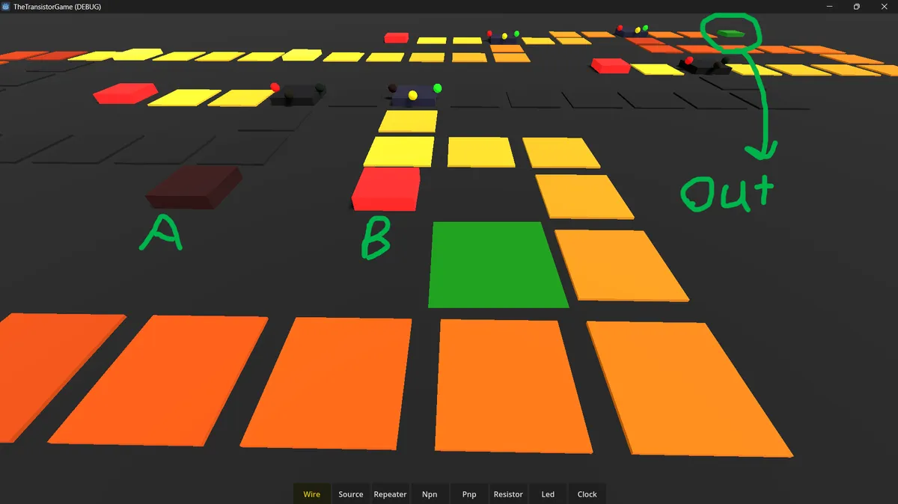
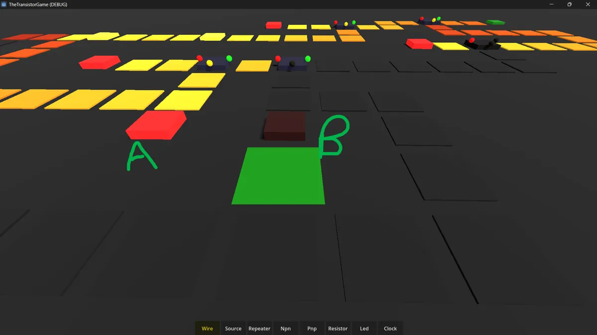
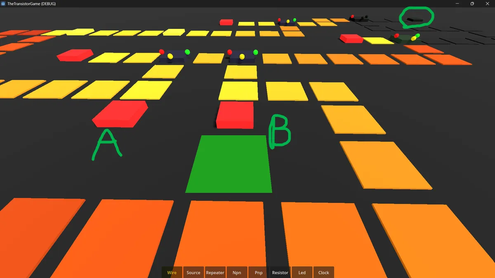

Game development
Transistor Playground
A Godot 3D simulation of transistors. You can make working logic gates with transistors such as XOR gates or AND gates and its expandable.
- Version
- 0.1 (Prototype)
- Engine
- Godot 4.2+
- Language
- GDScript
- Renderer
- Forward+
- Last Updated
- 2026-04-16
XOR Gate Example:

§Table of Contents
- Game Overview
- Controls
- Components Reference
- Signal System
- Transistor Guide
- Logic Gate Blueprints
- Architecture Overview
- File Structure
- Simulation Engine
- Known Issues & Limitations
- Roadmap
§1. Game Overview
A first-person circuit-building sandbox. The player walks around a large flat board and places electronic components — wires, transistors, resistors, repeaters, LEDs, clocks — to construct working digital logic circuits.
The core inspiration is Minecraft redstone, but with real transistor mechanics. Instead of redstone torches and dust, you work with NPN and PNP transistors, signal decay over wire runs, and repeaters. The same logical completeness applies: with NAND gates alone you can build any digital system. From a single transistor to a full CPU, every step is buildable from the components in this game.
The world is a single large flat board viewed from first-person ground level. Components snap to a 1m × 1m tile grid. Wires connect automatically to adjacent components. Signal flows, decays, and is gated exactly as you would expect from real digital electronics.
§2. Controls
| Action | Key / Button |
|---|---|
| Move | WASD |
| Look | Mouse |
| Sprint | Shift |
| Jump | Space |
| Place component | Left-click |
| Remove component | Middle-click |
| Toggle source / clock frequency | Right-click |
| Inspect component (info panel) | Right-click (non-source) |
| Rotate before placing | R (cycles 0° → 90° → 180° → 270°) |
| Select hotbar slot | 1 – 7 |
| Cycle hotbar | Scroll wheel |
| Close info panel / release mouse | Escape |
§Placement workflow
- Select a component from the hotbar (number keys or scroll)
- Press R to rotate if needed — the highlight cursor rotates to preview orientation
- Look at the board — green highlight = valid placement, red = occupied
- Left-click to place
- Middle-click any placed component to remove it
§3. Components Reference
§Wire
Carries signal between components. Loses 1 strength per tile travelled.
| Property | Value |
|---|---|
| Signal loss | 1 per tile |
| Max range | 15 tiles from source or repeater |
| Connections | All 4 adjacent neighbours |
| Visual | Flat cube (0.8 × 0.05 × 0.8m). Colour gradient: dark grey (off) → orange → bright yellow (full strength) |
§Power Source
Emits a full-strength signal. Right-click to toggle on/off.
| Property | Value |
|---|---|
| Output strength | 15 (maximum) |
| Toggle | Right-click |
| Visual | Cube glows bright red when active, near-black when off |
§Repeater
Accepts any signal and re-emits it at full strength (15). Essential for long wire runs.
| Property | Value |
|---|---|
| Input threshold | Any signal > 0 |
| Output strength | Always 15 |
| Use case | Place every 14 wire tiles to maintain signal indefinitely |
| Visual | Amber cube, glows bright yellow-white when repeating |
§NPN Transistor
Normally open switch. Power flows Collector→Emitter only when Gate receives signal.
| Property | Value |
|---|---|
| Conducts when | Gate strength ≥ 1 |
| Default state | OFF (open circuit) |
| Signal loss | None through transistor body |
| Gate side | Left / Right (yellow sphere) |
| Collector side | Front (red sphere) — power IN |
| Emitter side | Back (green sphere) — power OUT |
| Real analogy | BJT NPN — small base current controls large collector current |
§PNP Transistor
Normally closed switch. Power flows Collector→Emitter unless Gate receives signal.
| Property | Value |
|---|---|
| Conducts when | Gate strength = 0 |
| Default state | ON (conducts if collector powered) |
| Signal loss | None through transistor body |
| Gate side | Left / Right (yellow sphere) |
| Collector side | Front (red sphere) — power IN |
| Emitter side | Back (green sphere) — power OUT |
| Real analogy | BJT PNP — base current blocks collector-emitter flow |
§Pin colour reference (same on both types)
| Colour | Pin | Role |
|---|---|---|
| Yellow | Gate | Control input |
| Red | Collector | Power IN |
| Green | Emitter | Power OUT |
§Resistor
Reduces signal strength by a fixed amount as it passes through.
| Property | Value |
|---|---|
| Strength reduction | 4 per resistor |
| Use case | Drop a signal below a gate threshold, or kill a weak signal entirely |
| Real analogy | Ohm's Law: V = IR |
| Tip | Two in series drops by 8. Four in series kills any signal |
§LED
Lights up when it receives any signal. Terminal — does not pass signal onward.
| Property | Value |
|---|---|
| Minimum signal | 1 |
| Output | None (terminal component) |
| Brightness | Scales with incoming signal strength |
| Visual | Small cube glows bright green, brightness proportional to strength |
§Clock
Auto-oscillating source. Pulses between HIGH and LOW automatically. Required for sequential logic.
| Property | Value |
|---|---|
| Default frequency | 1 Hz (0.5s per half-cycle) |
| Right-click | Cycles through preset frequencies |
| Presets | 1Hz / 2Hz / 4Hz / 10Hz / 20Hz |
| Use case | Flip-flops, counters, shift registers, CPUs |
| Visual | Cyan cube, pulses on/off |
§4. Signal System
Signal strength is an integer from 0 to 15. It works identically to Minecraft redstone signal strength.
§Decay
Every wire tile a signal passes through reduces its strength by 1.
Source(15) → Wire(14) → Wire(13) → Wire(12) → ... → Wire(1) → Wire(0, dead)
A signal dies after 15 wire tiles. Place a Repeater to reset it to 15.
§Repeater
Source(15) → Wire(14) → Repeater(15) → Wire(14) → Wire(13) → ...
§Resistor
Source(15) → Resistor → Wire(10) → Wire(9) → ... (drops 4+1 per tile)
§Rules summary
| Component | Effect on signal |
|---|---|
| Wire | -1 per tile |
| Repeater | Reset to 15 |
| Resistor | -4 |
| Transistor (open) | No loss |
| LED | Absorbs signal, outputs nothing |
| Source | Always 15 when active |
§5. Transistor Guide
§NPN — Normally Open
Think of NPN as a door that is normally shut. Sending signal to the gate opens the door.
[Collector] → power enters here
[Gate] → when HIGH, opens the transistor
[Emitter] → power exits here when gate is open
Truth table:
| Collector powered | Gate signal | Emitter output |
|---|---|---|
| No | No | No |
| Yes | No | No |
| No | Yes | No |
| Yes | Yes | Yes |
§PNP — Normally Closed
Think of PNP as a door that is normally open. Sending signal to the gate closes the door.
[Collector] → power enters here
[Gate] → when LOW, conducts. When HIGH, blocks
[Emitter] → power exits here when gate is LOW
Truth table:
| Collector powered | Gate signal | Emitter output |
|---|---|---|
| No | No | No |
| Yes | No | Yes |
| Yes | Yes | No |
| No | Yes | No |
§Rotation
Press R before placing to rotate the transistor. The yellow gate sphere indicates the gate sides. Red collector sphere and green emitter sphere show power in and power out respectively. Rotate until the pins face the correct wire connections for your layout.
§Chaining transistors
Transistors can chain — the emitter of one can feed the gate or collector of another. The simulation resolves chains correctly regardless of depth: each emitter activation immediately propagates downstream, so the next transistor in the chain sees the correct input on the same simulation tick.
§6. Logic Gate Blueprints
All layouts use the default transistor orientation. C = Collector (red/front), E = Emitter (green/back), G = Gate (yellow/left or right). Arrows show wire connections.
§Buffer (NPN)
Output is HIGH when input is HIGH.
[VCC] → [C-NPN-E] → [LED]
[Input] → [G]
§NOT Gate (PNP)
Output is HIGH when input is LOW.
[VCC] → [C-PNP-E] → [LED]
[Input] → [G]
§AND Gate (2× NPN in series)
Output HIGH only when both inputs are HIGH.
[VCC] → [C-NPN1-E] → [C-NPN2-E] → [LED]
[Input A] → [NPN1 Gate]
[Input B] → [NPN2 Gate]
§OR Gate (2× NPN in parallel)
Output HIGH when either input is HIGH.
[VCC] → [C-NPN1-E] → [LED wire]
[VCC] → [C-NPN2-E] → [same LED wire]
[Input A] → [NPN1 Gate]
[Input B] → [NPN2 Gate]
§NAND Gate (AND + PNP invert)
Output HIGH unless both inputs are HIGH.
[VCC] → [C-NPN1-E] → [C-NPN2-E] → [PNP Gate]
[VCC] → [C-PNP-E] → [LED]
[Input A] → [NPN1 Gate]
[Input B] → [NPN2 Gate]
§NOR Gate (OR + PNP invert)
Output HIGH only when both inputs are LOW.
[VCC] → [C-NPN1-E] → [PNP Gate wire]
[VCC] → [C-NPN2-E] → [same PNP Gate wire]
[VCC] → [C-PNP-E] → [LED]
[Input A] → [NPN1 Gate]
[Input B] → [NPN2 Gate]
§XOR Gate
Output HIGH when inputs differ. Requires NAND + OR feeding a second AND stage.
Stage 1: Build a NAND gate → NAND output wire
Stage 2: Build an OR gate → OR output wire
Stage 3: AND gate with:
NPN1 collector ← VCC
NPN1 gate ← NAND output wire
NPN1 emitter → NPN2 collector
NPN2 gate ← OR output wire
NPN2 emitter → LED
Output is HIGH when exactly one input is HIGH.
XOR gate verified working in-game — see screenshots.
A=0; B=1
A=1;B=0

A=1; B=1

§7. Architecture Overview
The project is split into three clean layers that don't know about each other:
┌─────────────────────────────────────┐
│ Visual Layer │
│ Component scenes, meshes, │
│ emission materials, indicator │
│ spheres. Purely cosmetic. │
└────────────────┬────────────────────┘
│ on_sim_update()
┌────────────────▼────────────────────┐
│ Grid Layer │
│ CircuitBoard.gd │
│ 2D Dictionary keyed by Vector2i. │
│ Source of truth for what is │
│ placed where. Handles raycasting, │
│ placement, removal, connection │
│ routing with rotation support. │
└────────────────┬────────────────────┘
│ register/unregister nodes
┌────────────────▼────────────────────┐
│ Simulation Layer │
│ SimulationManager.gd (Autoload) │
│ Pure graph of sim nodes. Knows │
│ nothing about 3D. BFS solver with │
│ ordered transistor resolution. │
└─────────────────────────────────────┘
§Key design principles
- Simulation is 3D-unaware. The solver operates on a graph of dictionaries. Nodes have types, strengths, and connection lists. No Vector3, no Node3D.
- Event-driven.
run_simulationonly runs whenmark_dirty()is called. No per-frame simulation cost when nothing is changing. - Changed-only visual updates. After each sim run,
on_sim_updateis only called on nodes whosepoweredorstrengthstate changed. No unnecessary material writes. - Directional connections. Transistors expose
get_node_id_for_side(dir)which CircuitBoard calls to route adjacent wires to the correct gate/collector/emitter node based on physical position and rotation.
§8. File Structure
res://
├── autoloads/
│ ├── SimulationManager.gd ← Global circuit solver (Autoload)
│ └── ComponentRegistry.gd ← All component definitions (Autoload)
├── nodes/
│ ├── CircuitBoard.gd ← Grid, placement, connection routing
│ └── Player.gd ← First-person controller
├── components/
│ ├── ComponentBase.gd ← Base class (class_name ComponentBase)
│ ├── Wire.gd
│ ├── Source.gd
│ ├── Repeater.gd
│ ├── Resistor.gd
│ ├── LED.gd
│ ├── Clock.gd
│ ├── TransistorNPN.gd
│ └── TransistorPNP.gd
└── ui/
├── InfoPanel.gd
└── Hotbar.gd
§Autoload registration order (matters)
- SimulationManager
- ComponentRegistry
§9. Simulation Engine
§SimNode dictionary structure
Every placed component registers one or more sim nodes. Each node is a GDScript Dictionary:
{
"id": String, # unique node ID
"type": String, # see type list below
"powered": bool,
"strength": int, # 0-15
"connections": Array, # list of connected node IDs
"visual_node": Node3D, # reference for on_sim_update calls
# type-specific fields:
"transistor_id": String, # transistors only
"gate_threshold": int, # transistors only
"resistance": int, # resistors only
"clock_interval": float, # clocks only
}
§Node types
| Type | Description |
|---|---|
source |
Active power source |
wire |
Signal carrier, decays by 1 |
repeater |
Resets signal to 15 |
resistor |
Drops signal by resistance |
led |
Terminal receiver |
transistor_emitter_npn |
NPN output node |
transistor_gate_npn |
NPN control input |
transistor_collector_npn |
NPN power input |
transistor_emitter_pnp |
PNP output node |
transistor_gate_pnp |
PNP control input |
transistor_collector_pnp |
PNP power input |
§Solver sequence
run_simulation()
│
├── Snapshot previous state (for change detection)
│
├── Step 1: Reset all non-source nodes to strength=0, powered=false
│
├── Step 2: BFS from all active sources
│ └── Propagates through: wires, repeaters, resistors,
│ gates, collectors. Skips emitters.
│
├── Step 3: Unified emitter resolution loop
│ └── Scan all emitter nodes
│ ├── NPN: conducts if gate.strength >= 1 AND col.strength > 0
│ ├── PNP: conducts if gate.strength < 1 AND col.strength > 0
│ ├── If conducts: set emitter strength, _bfs([emitter_id])
│ └── Repeat until full scan finds nothing new (safety cap: 128)
│
└── Step 4: Notify only changed nodes via on_sim_update()
The immediate BFS after each emitter activation is the critical detail — it propagates the emitter's output into downstream gates and collectors before the next emitter is evaluated, allowing chains of any depth and type to resolve correctly in a single run_simulation call.
§Adding a new component type
- Add an entry to
ComponentRegistry.COMPONENTSwith scene path, sim template, and info text - Create the
.tscnscene with aComponentBase-extending script as the root - Implement
on_sim_update(powered, strength)for visual feedback - If the component needs special sim behaviour, add a case to
SimulationManager._strength_into() - If directional (like transistors), implement
get_node_id_for_side(dir)and callinit_sim_nodesfrom CircuitBoard
§10. Known Issues & Limitations
§InfoPanel text wraps vertically
The info panel PanelContainer is too narrow for some screen sizes, causing text to wrap character by character. Workaround: increase the panel width in the InfoPanel scene (set VBox minimum width to 400+).
§No component rotation persistence
Rotation resets to 0 between placements. You must press R again for each new component. Intentional for now but could be made sticky per component type.
§Fixed board size
The board is a fixed 64×64 grid. No infinite terrain, no multi-board connections yet. A 64×64 grid gives 4,096 cells which is sufficient for complex gates and small CPUs but would need expansion for larger projects.
§No save/load
Circuit state is not persisted between sessions. The IC system (next milestone) will introduce JSON serialisation which will also enable board save/load.
§Signal decay affects transistor gate inputs
A gate wire that has travelled 15+ tiles without a repeater will have strength 0 and fail to open an NPN transistor. Always use a repeater before a long gate wire run, or place the gate source close to the transistor.
§11. Roadmap
§Next (v0.2)
- Wire visual connection stubs — wires extend visually toward adjacent wires so circuit runs look like lines rather than isolated cubes
- InfoPanel UI fix — readable text at all screen sizes
- IC save system — select a region, name it, save as reusable black-box component placed from hotbar
§Near term (v0.3)
- Copy/paste region — select a rectangle of components and stamp elsewhere
- Grid overlay — faint grid lines on board surface for alignment
- Component labels/signs — placeable text signs for labelling circuit sections
§Medium term (v0.4)
- Blender models — replace placeholder cubes with real component geometry (max 0.9 × 0.9 × 0.4m per tile)
- Multiple boards — vertical wall boards, boards connecting via port nodes at edges
- Sound design — click on place/remove, hum on powered boards
§Long term
- Analog simulation — resistors, capacitors, inductors with real voltage/current values using Modified Nodal Analysis (MNA) solver implemented in C++ via GDExtension
- Audio output — speaker component routing simulated voltage to Godot's AudioStreamGenerator
- Multiplayer — shared boards, collaborative circuit building
§Appendix: Godot Project Setup
§Autoloads (Project Settings → Autoload)
| Name | Path |
|---|---|
| SimulationManager | res://autoloads/SimulationManager.gd |
| ComponentRegistry | res://autoloads/ComponentRegistry.gd |
SimulationManager must be listed above ComponentRegistry.
§Scene hierarchy (Main.tscn)
Node3D (Main)
├── WorldEnvironment
├── DirectionalLight3D
├── CircuitBoard (StaticBody3D + CircuitBoard.gd)
│ └── CollisionShape3D (BoxShape3D 64×0.2×64)
│ └── BoardMesh (PlaneMesh 64×64, dark grey material)
└── Player (CharacterBody3D + Player.gd)
├── CollisionShape3D (CapsuleShape3D)
├── Head (Node3D, y=1.65)
│ └── Camera3D
│ └── Ray (RayCast3D, target z=-10)
├── Highlight (MeshInstance3D, PlaneMesh 1×1)
└── HUD (CanvasLayer)
├── InfoPanel (PanelContainer + InfoPanel.gd)
└── Hotbar (HBoxContainer + Hotbar.gd)
§Collision layers
| Layer | Name | Used by |
|---|---|---|
| 1 | world | CircuitBoard StaticBody3D |
| 2 | player | Player CharacterBody3D |
Player RayCast3D collision mask: Layer 1 only.
§Component scene structure
All component scenes follow this pattern:
Node3D (root, extends ComponentBase via attached script)
└── Mesh (MeshInstance3D with BoxMesh)
Transistor scenes additionally have:
Node3D (root)
├── Mesh
├── GateLight (SphereMesh, x=-0.38, y=0.18, z=0)
├── CollectorLight (SphereMesh, x=0, y=0.18, z=-0.38)
└── EmitterLight (SphereMesh, x=0, y=0.18, z=+0.38)
§Placeholder mesh sizes
| Component | BoxMesh size (x × y × z) |
|---|---|
| Wire | 0.8 × 0.05 × 0.8 |
| Source | 0.6 × 0.3 × 0.6 |
| Repeater | 0.7 × 0.2 × 0.7 |
| NPN / PNP | 0.7 × 0.25 × 0.7 |
| Resistor | 0.8 × 0.15 × 0.8 |
| LED | 0.5 × 0.18 × 0.5 |
| Clock | 0.6 × 0.3 × 0.6 |
When replacing with Blender models, maximum bounding box per component is 0.9 × 0.9 × 0.4m to fit within one tile with clearance. Export as .glb, Forward axis -Z, Up axis Y, apply all transforms before export.
Transistor Game — Internal Development Documentation Built with Godot 4 — GDScript